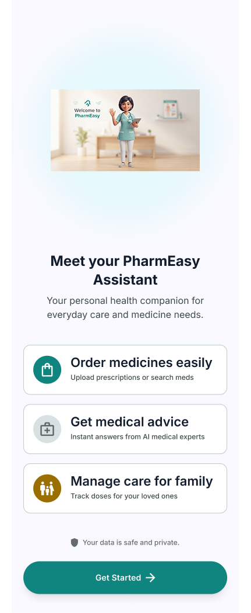
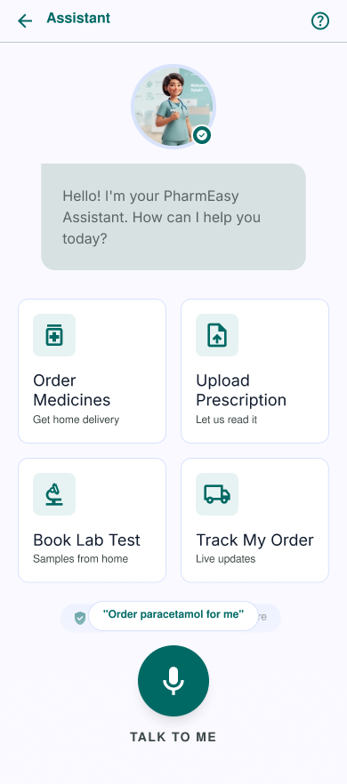
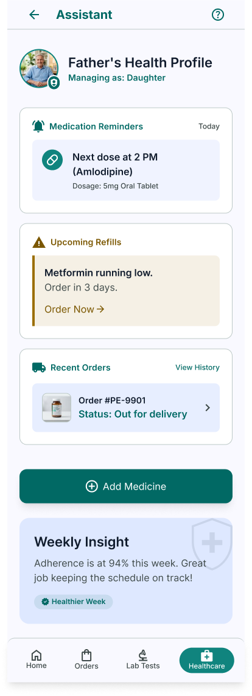
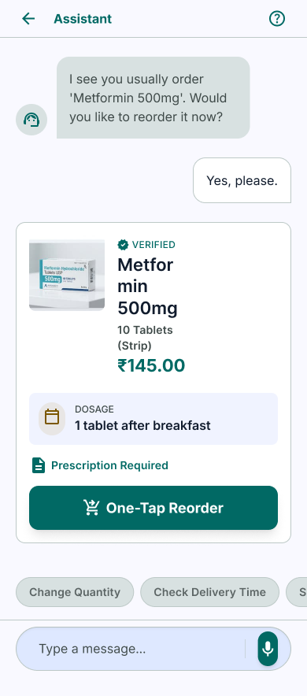
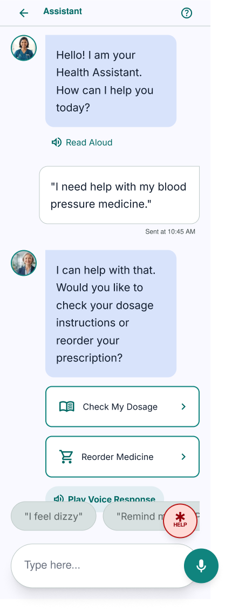
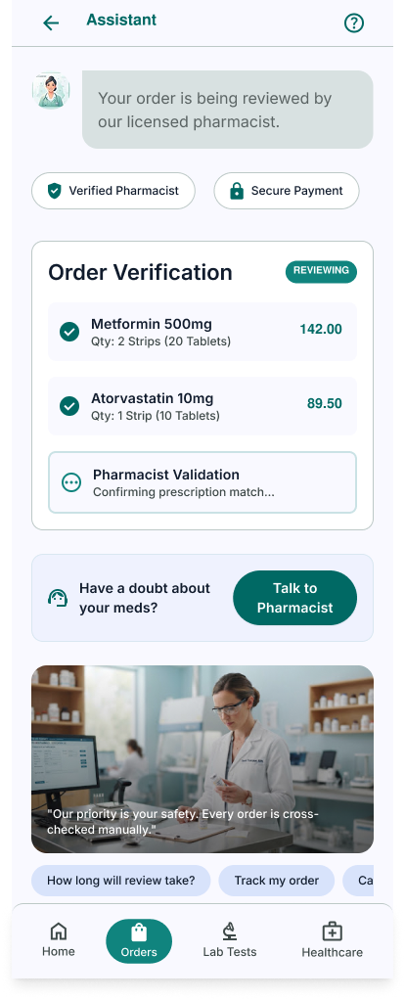
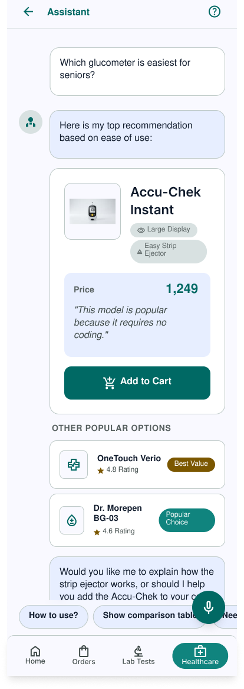
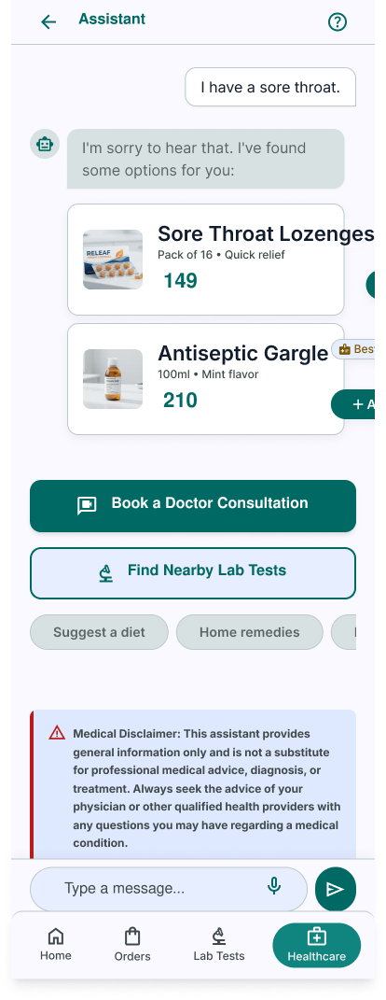
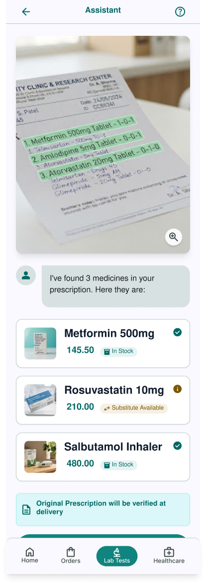

India's leading online pharmacy and health platform. As a Product Design Intern, I worked across four distinct workstreams: user research for a 50+ conversational commerce feature, UX analysis of 10+ journeys, UI design across Android and web, and strategic internal documentation.

Assistant onboarding

Conversational home

Family health profile

One-tap reorder
Led the research workstream for a conversational commerce feature targeting users aged 50+. This demographic represents a growing share of PharmEasy's user base — yet existing conversational UI patterns consistently fail them.
Caregiver profile — daughter managing father's health

50+ conversational flow — voice + simplified UI
Conducted in-depth interviews to surface healthcare concerns, digital friction points, and shopping preferences. Studied apps they already used comfortably (WhatsApp, YouTube) to understand existing muscle memory before designing new patterns.
Identified a secondary user type no competitor had centred: the caregiver managing an elderly family member's health through the same app. Mapped 6 distinct caregiver scenarios and presented them as new product roadmap opportunities.
The caregiver use case expanded the definition of the target user for the conversational commerce feature — a net-new product direction surfaced through research, not assumption.
Conducted systematic competitor analysis and mapped 10+ user journeys across PharmEasy's health features, translating findings directly into sprint planning inputs.

Order verification — pharmacist review flow

50+ product recommendation — Accu-Chek for seniors
Journey maps for 10+ flows gave the product team a shared language for discussing user pain points. Competitive analysis of delivery guarantee UX directly shaped the "On Time or Free" feature update.
Designed across both mobile and web platforms, working within PharmEasy's existing design language while contributing new components that extended the system.

Symptom checker — sore throat flow

Prescription scan + auto-extract
One-tap reorder — Metformin 500mg
Design system contributions reduced duplication across 3 parallel product teams. Icon redesigns improved visual clarity confirmed in internal stakeholder reviews.
In the final phase, I contributed to a less typical but equally valuable area: strategic documentation and internal feature rollout planning.
Assistant home — 4 quick actions
Voice + text — designed for 50+
Developed organic, zero-budget marketing ideas for feature promotion across social channels — educational content formats aligned with PharmEasy's health-platform context and trust-sensitive brand.
Authored SOPs for spreading feature awareness internally — digital channels (emailers, Slack) and offline (printed posters, team briefings) — ensuring frontline staff could articulate new features confidently from launch day.
A feature that launches without an internal communication plan is half-launched. SOPs gave me a product management perspective — design decisions have to survive the handoff to sales, support, and ops, not just engineering.
Designing for 50+ users forced me to question every assumption about "normal" digital behaviour. The constraints made the work better across the board.
At PharmEasy's scale, inconsistency compounds. One misaligned component creates ripples across 3 product teams. Design the system first, the screen second.
Presenting to PMs, engineers, and stakeholders in the same week taught me to frame design decisions in terms of user value and business outcomes, not aesthetics.
Writing SOPs and journey maps is design work. Clarity on paper predicts clarity in the product. I treat documentation as a thinking tool, not a deliverable.
Questions about this role?